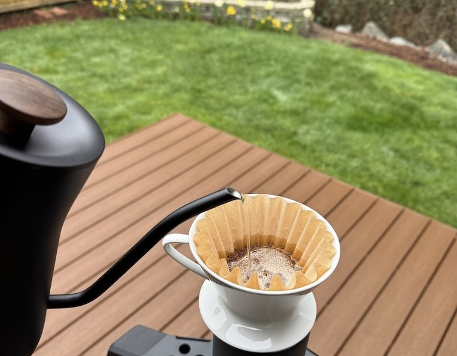

Pour-over Coffee
Chop wood, carry water.

Description
By collecting and grinding our own beans, then heating and pouring water we can bring zen to our daily coffee routine.
Implements
- Food scale, set to grams
- Coffee grinder
- Coffee dripper
- Filter for dripper
- Kettle to heat water (prefer goose-neck for precise pouring
- 12 ounce or larger heat-resistant mug or flask
Ingredients
- 23 grams light-roast, whole bean coffee (prefer single-origin)
- 400 grams organically filtered water (prefer glacier water if not too dear)
Steps
- Heat water in kettle to 203 degrees Fahrenheit
- Grind coffee beans at roughly the fineness of table salt
- Place filter in dripper and set on top of mug or flask
- Place coffee grounds in filter
- Slowly and evenly pour 50 grams of water over the grounds
- Let steep for 30 seconds
- Slowly and evenly pour another 100 grams of wanter over the grounds
- Pause for water to recede to within 1 centimeter of top of grounds
- Repeat steps 7-8 until total water poured reaches 350 grams
- Let water complete filtering through grounds then dispose of the filter and grounds (or set aside for compost)
- Sip and enjoy with appropriate levels of biological heat-sensing wisdom
HOME